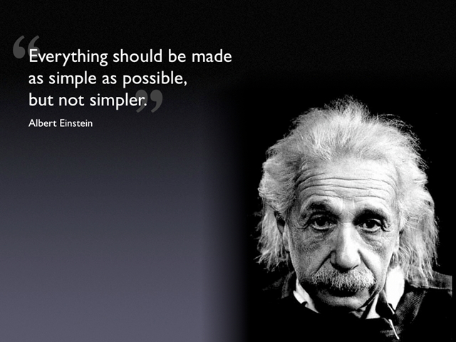

Some Illustrative Examples

- These are FOL theorems, but they are not RM3 theorems
| #
|
| Axioms
| ⊨
| Conjecture
|
|
| 1
|
| p, ¬p
| ⊨
| q
|
| 2
|
| q
| ⊨
| p → q
|
| 3
|
|
| ⊨
| (¬p ∨ q) ↔ (p → q)
|
| 4
|
|
| ⊨
| p → (q ∨ ¬q)
|
| 5
|
|
| ⊨
| ∃X (g(X) ∧ ¬g(X)) → h(b)
|
- Comments
- #1 has contradictory axioms - the original motivation!
- Cases due directly to difference in → and ↔, e.g.,
in #2 set ⟦p⟧ = T and ⟦q⟧ = B
- #3 directly illustrates the difference
- If q is replaced by p in #4, it's an RM3 theorem ... a tinge of
relevance
- #5 illustrates that things can be both true and false